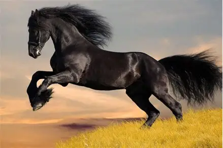

Cassimara égua
Mas é a minha égua
Vamos observar as caracteristicas de uma égua na lista abaixo
Sexo: é a fêmea adulta da espécie equina (cavalo).
Físico: corpo esguio e musculoso, pernas longas, cascos fortes, crina e cauda volumosas.
Comportamento: geralmente dócil, inteligente e sensível; capaz de criar vínculos com humanos e outros animais.
Função: usada em reprodução, esportes e atividades rurais. Pode ser treinada para corrida, equitação, carga ou exibição.
Socialização: vive em grupos hierárquicos, muitas vezes liderados por uma égua dominante.
Alimentação: feno, grãos, suplementos minerais e água fresca são essenciais para sua saúde.
Gestação: dura em média cerca de 11 meses, e a égua é responsável por cuidar do potro após o nascimento.
Se você gosta de cavalos, basta clicar nesta palavra
CAVALO
e será redirecionado a um site sobre cavalos
Segue abaixo algumas imagens de cavalos
cavalinho lindo

cavalo preto cabuloso
cavalinho pula-pula